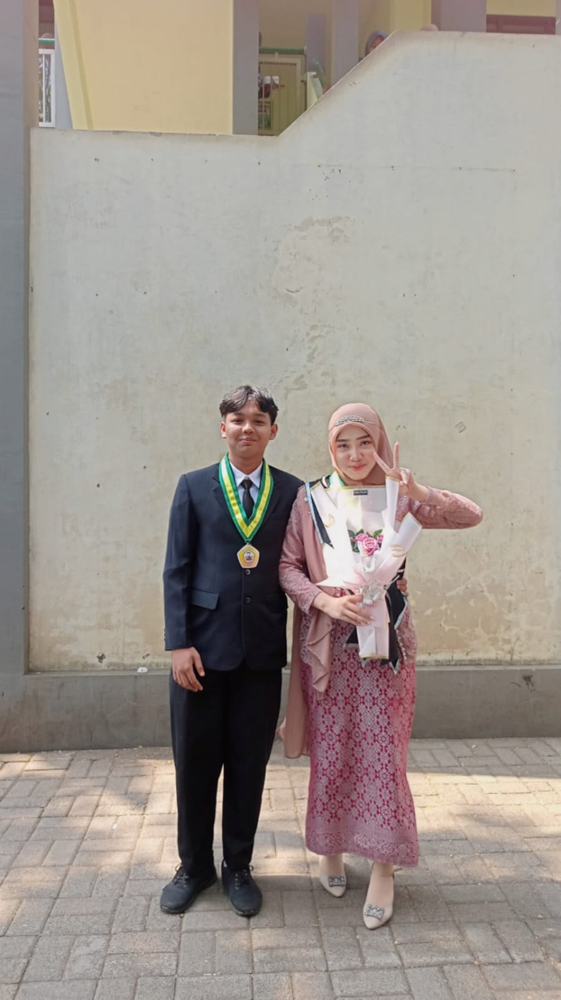

"Embrace the Thrill of"
Exploration

 Explore
Explore


 Explore
Explore


Kisah kita berawal dari masa SMA hehehehehe..
first impresion aku ktemuu dia (Vanessa) di SMA bner bner kagum, pada pandangan pertama wkwkwk, ga lama kemudian aku PDKT dengan diaa, dengan alasan pengen mainin akun diaa xixixi, sampe chat an terus dan lama kelamaan kami saling suka dan berpacaran, waktu demi waktu kita berpacaran waktu sma, sayangnya saya masih belum cukup berani untuk bucin kaya temen-temen lainnya, im so sorryyyyyy:(( , selama pacaran itu kita cuma lewat chatting doang dan kita melalui banyak masalah, hingga suatu hari ada masa aku untuk melepas kamu di hidupku, waktunya aku ikhlas..
Sejak hari itu, gw pun rasa sayang gw blum ilang wkwkwk, jujur aku masih gamon:( , tapi selang beberapa bulan aku sudah bner" ikhlas melepas dia dari hidupku, aku pun merubah hidupku, dari yang awalnya nolep berani main motor xixixi, apalagi aku dlu ke cewe friendly banget ahahaha(SUPER DUPER REDFLAG), hingga aku melihat dia (Vanesaa) memiliki cowo baru, akupun tidak terlalu peduli karena aku menikmati hidupku itu, aku hanya bisa doakan I hope your new guy is better than me. walau masii ada rasa cemburu sedikit, apalagi di ledekin temen temenku, ak cm bisa ketawa doang hehe, setelah 2 tahun aku lost contact dengan dia, bahkan gamau lihat mata dia lagi, sampe bilang ke temen temen aku gamau dia lagi, tp hatiku memamg bner" luluh denganmu
<
Suatu hari aku mendengar kabar dari temen kamu, katanya kamu suka aku lagi heheheheh, tapi dlu aku dah bner" ga pengen sama kamuu lagi, aku pengen kita temenan kaya biasa aja, tapi kayanya terlalu susah, aku luluh lagiii kepadamuu sayangg, aku tiap hari chat an sama kamuu dan pada hari kelulusan, aku membelikan buckett spesial untuk kamuu, harapan nya ini kenangan terakhir untuk kamu dariku sayangg, eh tp aku gabisa boong aku balik lagi jatuh cinta sama kamu, awalnya aku gamau pacaran lagi dgn bilang "mending gini aja, kita bisa deket siapapun tanpa cemburu", tapi gaenak juga kalo perasaan nya nge-gantung hingga pada tanggal 8 juli akuu ngungkapin pengen pacaran lagii sama kamu sampaiii sekarangg hehehehe terimakasiii yaaa sayanggkuu
Akhirnyaaa kita balikan, walau ada orang yg bilang buat apa balikan? terkadang dua orang perlu hancur dan berantakan terlebih dahulu setelah berpisah dan akhirnya kita dipertemukan di versi terbaik diri kita masing masing

Kukira ini momen terakhir kitaa sayang, saat graduation hehehe, ternyataaa enggaa i lovee uuu
Aku di moment ini bener bener ga expect kalo kamu nyamperin aku, terus minta tanda tangan ke baju xixixixi, cewe se gengsian ini tbtb nurunin ego demi foto bareng sama akuu><
 Dimana aku botak, tapi kamu ttep sayang aku hehehe
Dimana aku botak, tapi kamu ttep sayang aku hehehe
Momen dimana aku pulang dari malang, nt, tapii kamuu ttep bangga sama akuu, yaallah how lucky i am
Aku engga rela lepasin kamu aku engga akan pernah mau kehilangan kamu, bahkan aku lebih prioritaskan dirimu dibanding diriku sendiri, bahkan sekalipun aku sedang berada di titik terendahku, aku bakal selalu mikirin kamu, mikirin kebahagiaan kamuu, so pleasee kapanpun kamu ngerasa sedihh kamu ngerasa ga okayy, tell me I want you to be happy Cinta terakhirkuu
EH KOCAK...COBA LU SAYAT DADA GUA SAMPE BERDARAH.. DAN LU LIAT DI DADA GUA ADA APAAN...ADA PACARKU BOS...ITU ARTINYA GUA CINTA VANESSA NELLA FEBIOLA ... VANESSA TILL I DIE...PAHAM LU...
akan ku cintai sebaik baiknya, duniamu mungkin jahat tapi tangan kecil ku ini selalu bersedia untuk memelukmu sekalipun kau tidak memintanya, jangan selalu merasa sendiri dan tidak punya siapa siapa, aku ada disisimu, aku rumahmu, aku selalu ingin tau semua hal yang kau alami, i'm still here for u, always.
MAKASII BANYAAA YAA YANG SUDAA MENGUNJUNGI, Ty all!